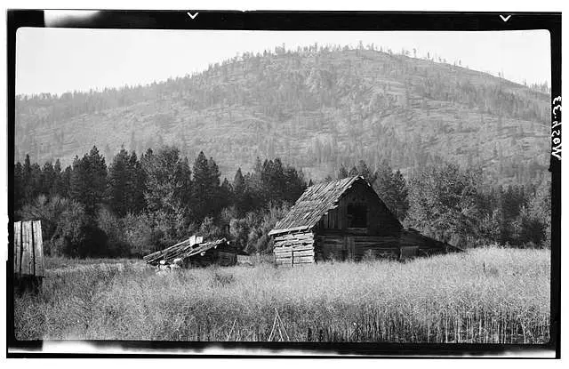
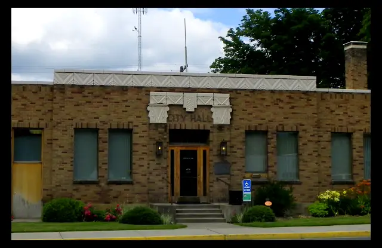

A Little About Us...
Colville is a beautiful piece of paradise! With its towering evergreens, quaint hometown feel, four seasons and wide array of activities, shops and businesses you will never be lost for something to do.
Historic demographics
Population:
1880 - 67
1900 - 594
1920 - 1,718
1940 - 2,418
1980 - 4,510
2010 - 4,673
Current demographics
Population: 4,724
Median Age: 43.4
Married: 57%
Current News
Trailer Fire The Cause of Two Deaths
Wolf Hit by Car on Highway 395
Colville Prepares for Some Major Construction